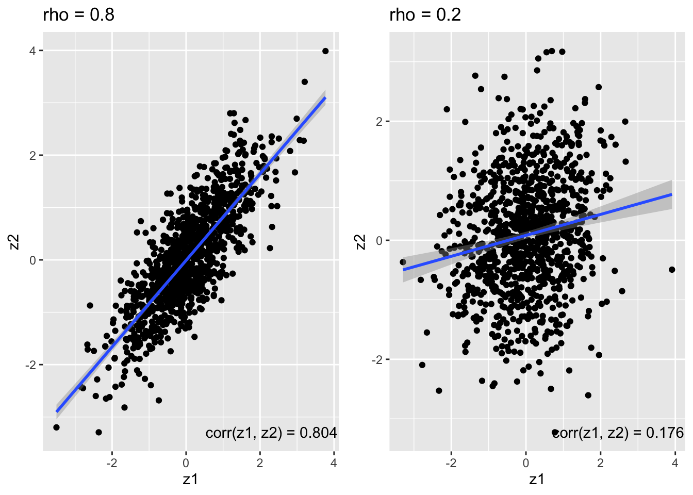

Code
library(dplyr)
library(ggplot2)Karl Tayeb
STATUS:
get_z <- function(fit){
with(summary(fit), coefficients[2, 1]/ coefficients[2,2])
}
get_b <- function(fit){
coef(fit)[2]
}
#' Null simulation
#'
#' simulate correlated (x1, x2) under multivariate normal model with correlation rho
#' simulate independent y with P(y=1) = 0.1
simulate_null <- function(n=500, rho=0.8, pi1=0.1){
x1 <- rnorm(n)
x2 <- sqrt(1- rho**2) * rnorm(n) + (rho * x1)
y <- rbinom(n, 1, pi1)
fit1 <- glm(y~x1, family="binomial")
z1 <- get_z(fit1)
b1 <- get_b(fit1)
fit2 <- glm(y~x2, family="binomial")
z2 <- get_z(fit2)
b2 <- get_b(fit2)
return(list(z1=z1, z2=z2, b1=b1, b2=b2))
}
# replicate simulation 500 times
e1 <- function(m = 500, n=500, rho = 0.8){
purrr::map_dfr(1:m, ~simulate_null(n = n, rho = rho)) %>%
filter(abs(b1) < 3) %>%
{cor(.$b1, .$b2)}
}
# vary cor(x1, x2) and check correlation of resulting effect estimates
cor_x1x2 <- seq(0.1, 0.9, by=0.1)
cor_bhat <- purrr::map_dbl(seq(0.1, 0.9, by=0.1), ~e1(rho=.x))
cor_bhat[1] 0.0765551 0.1784383 0.2984454 0.4395614 0.4562555 0.6009163 0.6760217
[8] 0.8099125 0.9043971#' Non-null simulation
#'
#' simulate correlated (x1, x2) under multivariate normal model with correlation rho
#' simulate independent y with P(y=1) = 0.1
simulate <- function(n=500, rho=0.8, b0=-1, b=1){
x1 <- rnorm(n)
x2 <- sqrt(1- rho**2) * rnorm(n) + (rho * x1)
logit <- b0 + x1 * b
pi1 <- 1/(1 + exp(-logit))
y <- rbinom(n, 1, pi1)
fit1 <- glm(y~x1, family="binomial")
z1 <- get_z(fit1)
b1 <- get_b(fit1)
fit2 <- glm(y~x2, family="binomial")
z2 <- get_z(fit2)
b2 <- get_b(fit2)
return(list(z1=z1, z2=z2, b1=b1, b2=b2))
}e2 <- function(m = 500, n=500, rho = 0.8, b0=-1, b=1){
purrr::map_dfr(1:m, ~simulate(n = n, rho = rho, b0=b0, b=b)) %>%
filter(abs(b1) < 3) %>%
{cor(.$b1, .$b2)}
}
# simulate non-null model with b0 = -1, b = 3
cor_bhat2 <- purrr::map_dbl(seq(0.1, 0.9, by=0.1), ~e2(rho=.x, b=3))
# b = 1
cor_bhat3 <- purrr::map_dbl(seq(0.1, 0.9, by=0.1), ~e2(rho=.x, b=1))
# b = 0.5
cor_bhat4 <- purrr::map_dbl(seq(0.1, 0.9, by=0.1), ~e2(rho=.x, b=0.5))
# b = 0.1
cor_bhat5 <- purrr::map_dbl(seq(0.1, 0.9, by=0.1), ~e2(rho=.x, b=0.1))The estimate effects are correlated the same as the underlying variables
make_plot <- function(sim, rho){
x <- min(sim$z1) + diff(range(sim$z1)) * 0.8
y <- min(sim$z2)
cor <- with(sim, round(cor(z1, z2), 3))
label = glue::glue('corr(z1, z2) = {cor}')
sim %>%
ggplot(aes(x=z1, y=z2)) +
geom_point() +
geom_smooth(method='lm') +
annotate('text', x = x, y = y, label = label) +
ggtitle(glue::glue('rho = {rho}'))
}
a <- make_plot(nullsim08, 0.8)
b <- make_plot(nullsim02, 0.2)
cowplot::plot_grid(a, b)`geom_smooth()` using formula = 'y ~ x'
`geom_smooth()` using formula = 'y ~ x'
make_plot2 <- function(n = 500, m = 1000, rho = 0.8, b0=-1, b=1){
sim <- purrr::map_dfr(1:m, ~simulate(n = n, rho = rho, b0=b0, b=b))
x <- min(sim$z1) + diff(range(sim$z1)) * 0.8
y <- min(sim$z2)
cor <- with(sim, round(cor(z1, z2), 3))
label = glue::glue('{cor}')
sim %>%
ggplot(aes(x=z1, y=z2)) +
geom_point() +
geom_smooth(method='lm') +
annotate('text', x = x, y = y, label = label) +
ggtitle(glue::glue('rho = {rho}, b = {b}'))
}We simulate \(n = 1000\) samples under a logistic model with \(b_0 = -1\) and effect \(b\), where \(x_1, x_2\) are multivariate normal distributed with covariance \(\Sigma = \begin{bmatrix} 1 & \rho \\ \rho & 1 \end{bmatrix}\)
We fix \(\rho = 0.8\) and vary \(b = 0, 1, 2, 3\). As the effect size grows, the correlation between the marginal \(z\)-scores \(z_1\) and \(z_2\) decreases.
In the Gaussian linear model it is easy to figure the expected z-score or noncentrality parameter (NCP). In the case of a known residual variance we have the simple model
\[ \begin{aligned} y \sim N(\beta x, \sigma^2) \end{aligned} \]
Then, assuming \(\frac{1}{N} x^Tx = 1\) and \(\bar x = 0\)
\[ \hat \beta = \frac{1}{N} y^T x \sim N(\beta, \frac{1}{N} \sigma^2) \] And
\[ \hat z = \sqrt{N} \frac{\hat \beta}{\sigma} \sim N(z, 1) \]
Often in practice we don’t know \(\sigma\), but for large \(N\) we can estimate it accurately, and the plug-in estimate is good. If we normalize \(y\) so that \(Var(y) = 1\), then we might conservatively assume \(\sigma = 1\), which is reasonable if the PVE is small (i.e. \(\beta^2\) is small)
\[ \frac{V(X\beta)}{V(Y)} = \frac{\beta^2N}{N} = \beta^2 \]
\[ V(Y) = V(X\beta + \sigma^2I) \approx N(\beta^2 + \sigma^2) \]
\[ \hat\beta = y^Tx \sim N(\beta, \sigma^2) \] \[ s^2 = \frac{1}{N} r^Tr \] Where \(r = y - \hat\beta x\) is the vector of residuals.
\[ \hat z = \hat \beta/s \]